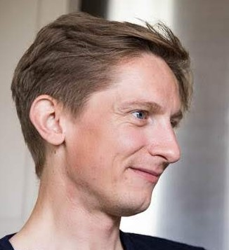

Tiffany Conroy
- 20 years of experience in software development
- Has worked as a developer, designer, manager, and leader
- Particular experience in process engineering, UI/UX, payments systems, and empathetic collaboration
- Photographer, amateur cook, storyteller

Tom Stuart
- 15 years of experience in software development
- Has worked as a developer, trainer, manager, and leader
- Particular expertise in software architecture, infrastructure, and agile ways of working
- Ultramarathon runner, standup comedian, vegan